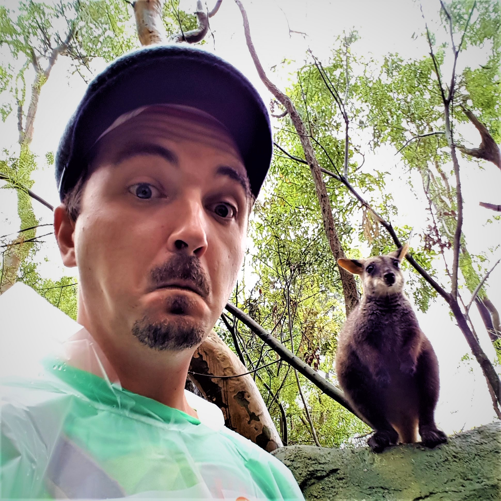

Intro
Learning how to code isn't easy. Learning how to code while co-running a 12/7 small business and training martial arts is brutal.
Thanks to my sister Mel, I'm able to carve out a couple of hours a week for studying.
My near term goal is to join Lambda School and work as a software engineer in the future.
Completed specializations on Coursera:
-
- Python for Everybody
- University of Michigan
5-course specialization
- Programming for Everybody (Getting Started with Python)
- Python Data Structures
- Using Python to Access Web Data
- Using Databases with Python
- Capstone: Retrieving, Processing, and Visualizing Data with Python
- Certificate earned: February 20, 2018
- show certificate
- show course site
-
- Data Science
- Johns Hopkins University
10-course specialization
- The Data Scientist’s Toolbox
- R Programming
- Getting and Cleaning Data
- Exploratory Data Analysis
- Reproducible Research
- Statistical Inference
- Regression Models
- Practical Machine Learning
- Developing Data Products
- Data Science Capstone
- Certificate earned: November 29, 2018
- show certificate
- show course site
-
- Deep Learning
- deeplearning.ai
5-course specialization
- Neural Networks and Deep Learning
- Improving Deep Neural Networks
- Structuring Machine Learning Projects
- Convolutional Neural Networks
- Sequence Models
- Certificate earned: March 21, 2019
- show certificate
- show course site
Completed courses on Coursera:
Portfolio

Data Science
Reproducible Research
Personal activity monitoring
- A brief report that answers some basic statistical questions about data collected from activity monitoring devices and how to deal with missing values
- data consists of two months of data from an anonymous individual
- written in R and R Markdown
- published on RPubs
A brief Analysis about the Impact of Severe Weather Events on Health and Economy in the US
- The basic goal of this analyses is to explore the NOAA Storm Database and answer some basic questions about the impact of severe weather events on health and economic consequences.
- written in R and R Markdown
- published on RPubs
Linear Regression models
Which gets you further, Automatic or Manual Transmission?
- In this brief analysis I take a look at R's famous “mtcars” dataset and try to answer the qustion wether
an automatic or a manual transmission gives you better miles per gallon (mpg) by finding a multivariable
regression model to enlight the linear relationship, while accounting for other variables.
- written in R and R Markdown
- published on RPubs
Practical Machine Learning
Do you even lift, correctly?
- This project uses data from accelerometers on how participants perform an exercise.
The goal is to build a machine learning model that accurately predicts how well the exercise is done based on the sensory data.
- written in R and R Markdown
Building Data Products
Dataset Memory Calculator for R
- The goal of the simple app was to help beginners in R to predict how much memory R requires for a given
dataset before you load it into R.
- written in R and build with Shiny from RStudio
- See short slide presentation about the app
The Tweedictor - A simple next word predictor from tweets
- The overall goal was to build an application that:
- is able to take as input a phrase (multiple words/half a sentence)
- analyses input with help of a predictive text model
- outputs a prediction of the most likely next word
- Model is based on over 2,36 million tweets
- written in R and build with Shiny from RStudio
- See short slide presentation about the app
About

G'day!
In 2012 I moved from Germany to Sydney, Australia and started to work for a German bakery.
The following years were all about learning the ropes of the business, saving up money, securing a permanent residency and enjoying Sydney lifestyle.
In 2017 my sister Melanie and I opened our own German bakery at Maquarie Centre in Sydney.
I'm also a current brown belt (red tip) in Ju Jitsu with Quantum Martial Arts, Sydney
Highlight Reel
- 2006-2010, B.A. in Political and Administrative Science from the University of Konstanz
- 2008/2009, Erasmus student exchange program, University of Copenhagen, Department of Psychology
- 2008, 6-months internship at the Goethe Institut in Washington, DC
- 2005/2006, German Air Force (Luftwaffe)
- 2000-2003, apprenticeship/formal education certificate program in banking.
Contact